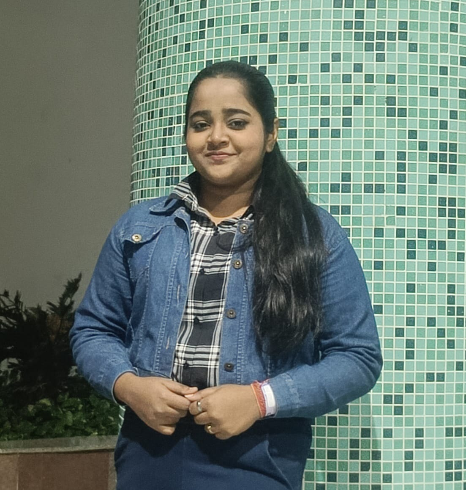

- Location:Bihar, India
- Email:bhavyacreates11@gmail.com
- Phone:+91 8837412408
- Website:http://www.abhishekvasu.dev
- https://www.linkedin.com/in/bhavya-singh-18a089223/
- https://github.com/bhavyasingh9822
-
 https://www.naukri.com/code360/profile/Bhavya9822
https://www.naukri.com/code360/profile/Bhavya9822
-
https://www.geeksforgeeks.org/user/bhavyacr0ged/
-
https://leetcode.com/u/user7976AS/
